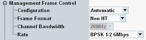

Management Frame Control Settings
These parameters configure the modulation/ coding rate of the transmitted management frames.

Management frame control settings
Selects automatic settings or user-defined frame rate control.
With automatic configuration, the following default frame rates are used:
- 1 Mbit/s for IEEE 802.11b, g and g/n
- 6 Mbit/s for IEEE 802.11a and g(OFDM)
- For SUU: 6.5 Mbit/s for IEEE 802.11a/n, g(OFDM)/n, and n(GF)
- For SUA: 6 Mbit/s for IEEE 802.11a/n, g(OFDM)/n, ac, and ax
Select the modulation/ coding rate of the transmitted management frames (beacon, authentication, association response and probe response). The available values depend on the selected standard.
Configure the parameters top-down.
The setting of rate is only relevant if "Configuration" = "User Defined".
For "Channel Bandwith", refer to "Operating Channel Width".
Remote command: